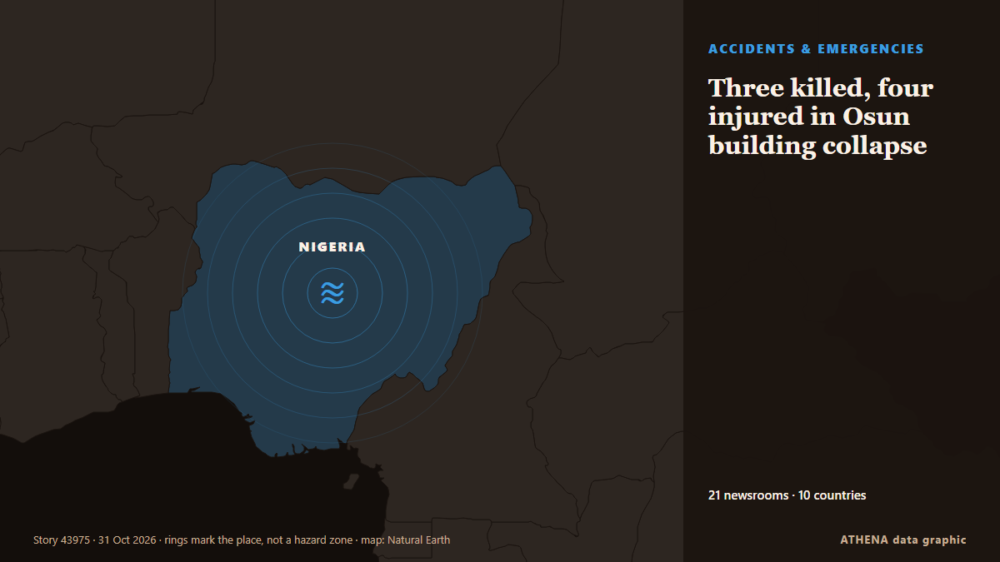

Three killed, four injured in Osun building collapse

The Lagos State Emergency Management Agency (LASEMA) has confirmed one death and the rescue of three adult males following the collapse of a two-storey building under construction in Fadeyi, Lagos. από Vanguard
Αναφέρθηκε ανεξάρτητα από 18 μέσα σε 9 χώρες από τις 23 Οκτ, πρώτο το Vanguard· η κάλυψη εξασθενεί. Το ATHENA εκτιμά τον κίνδυνο αυξημένο (4.2/10), κυρίως λόγω της σοβαρότητάς του και της εμβέλειάς του. Βεβαιότητα 85% (υψηλή): το επιβεβαιώνουν 18 ανεξάρτητα μέσα, μέση αξιοπιστία 70%. Μέσα ανά χώρα: Νιγηρία (23), Ινδία (4), Ηνωμένο Βασίλειο (4). Κάλυψη: 23 Οκτ έως 30 Οκτ, 161 ώρες.
Γιατί έχει σημασία: Οι νομικές αλλαγές και οι αλλαγές πολιτικής μεταβάλλουν δικαιώματα, υποχρεώσεις και δημόσιες υπηρεσίες για όσους αφορούν.
Τι άλλαξε: 3 νέες αναφορές από 2 μέσα στο 24ωρο έως 31 Οκτ.
Πρώτη διατύπωση: One dead, three rescued in Lagos building collapse
Οι τίτλοι των ειδήσεων παρουσιάζονται στα αγγλικά, όπως δημοσιεύτηκαν.
Με μια ματιά
Επιλέγεται, βαθμολογείται και γράφεται από τη δημοσιευμένη μεθοδολογία του ATHENA. Κανένας συντάκτης δεν παρεμβαίνει σε μεμονωμένα γεγονότα. Πώς παράγεται ›
| 23 Oct 07:25 UTC | 3 |
|---|---|
| 23 Oct 19:25 UTC | 0 |
| 24 Oct 07:25 UTC | 0 |
| 24 Oct 19:25 UTC | 0 |
| 25 Oct 07:25 UTC | 0 |
| 25 Oct 19:25 UTC | 0 |
| 26 Oct 07:25 UTC | 1 |
| 26 Oct 19:25 UTC | 6 |
| 27 Oct 07:25 UTC | 2 |
| 27 Oct 19:25 UTC | 6 |
| 28 Oct 07:25 UTC | 5 |
| 28 Oct 19:25 UTC | 7 |
| 29 Oct 07:25 UTC | 6 |
| 29 Oct 19:25 UTC | 5 |
| 30 Oct 07:25 UTC | 0 |
| 30 Oct 19:25 UTC | 1 |
| 31 Oct 07:25 UTC | 2 |
| 28 Oct 16:42 UTC | 7.8 |
|---|---|
| 28 Oct 23:42 UTC | 6.7 |
| 29 Oct 23:55 UTC | 6.8 |
| 30 Oct 07:46 UTC | 4.5 |
| 31 Oct 14:57 UTC | 4.2 |
Γιατί αυτοί οι αριθμοί
Σημασία
Κίνδυνος
Βεβαιότητα
Η κάλυψη — ποιος το ανέφερε και πότε
ο τίτλος όπως δημοσιεύτηκε · ανοίγει το πρωτότυπο- Vanguard · ΝιγηρίαOne dead, three rescued in Lagos building collapse
- Channels TV · ΝιγηρίαOne Dead, Three Rescued As Building Collapses In Lagos
- Daily Trust · ΝιγηρίαLagos: One dead, several feared trapped as building collapses
- NDTV · ΙνδίαSeveral Workers Trapped In Bengal Coal Mine After Pulley System Glitch
- Punch · ΝιγηρίαFire guts residential building in Anambra
- Punch · ΝιγηρίαTraders seek Lagos intervention to prevent market fires
- Punch · ΝιγηρίαMotorists groan as flood triggers gridlock in Lagos community
- Chronicle Live (Newcastle) · Ηνωμένο ΒασίλειοBlyth Relief Road update with Government backing for £55m scheme 'off the table'
- Express Tribune · ΠακιστάνOne worker killed, six injured as under-construction plaza roof collapses in Multan
- The Hindu · ΙνδίαAll 14 workers trapped at Bengal coal mine rescued
- Graphic Online · ΓκάναAuthority begins Okada operator registration in November
- Punch · ΝιγηρίαPolice confirm three killed, inspector injured in Kebbi violence
- MyJoyOnline · ΓκάναOne dead, 14 injured in Akuse–Akosombo highway crash
- Punch · ΝιγηρίαSAHCO, Air Algérie seal ground handling deal
- Punch · ΝιγηρίαLagos to host African Brands Congress on AI
- Punch · ΝιγηρίαKebbi violence leaves three dead, residents fleeing communities
- Stuff · Νέα ΖηλανδίαPerson found dead in car crashed into water in Marlborough
- Punch · ΝιγηρίαLagos driver fleeing police arrest kills okada rider, injures two
- Birmingham Mail · Ηνωμένο ΒασίλειοDeals struck at collapsed Midland flooring firm saving 147 jobs
- The Hindu · Ινδία26 dogs rescued from suspected meat trade in Assam
- The Herald (Scotland) · Ηνωμένο ΒασίλειοFormer C&A building on Sauchiehall Street could be turned into 'boutique' hotel
- Irish Examiner · ΙρλανδίαHosanna in the highest bid: St Vincent's Church sale agreed at €400k
- The Hindu · ΙνδίαChild rescued in Ranipet; four persons held
- Belfast Telegraph · Ηνωμένο ΒασίλειοVincent Kompany released from hospital following collapse last week
- Punch · ΝιγηρίαLagos tackling 3.3m housing deficit, says Sanwo-Olu
- Punch · ΝιγηρίαLagos court denies wheelchair-bound suspect bail over murder
- Punch · ΝιγηρίαResidents groan as blackout hits Lagos communities
- Punch · ΝιγηρίαLagos man bags life jail for defiling 11-year-old girl
- Punch · ΝιγηρίαLagos warns motorists against ember months recklessness
- Punch · ΝιγηρίαHealth firm offers free screenings at Lagos fitness event
- NEWS.am (English) · ΑρμενίαOne of persons trapped under soil due to Yerevan street collapse dies
- NEWS.am (English) · ΑρμενίαFootage from scene of Yerevan street collapse
- Nile Post · ΟυγκάνταKompany discharged from hospital following collapse
- Nile Post · ΟυγκάνταNBRB Cites Structural Flaws in Bwerenga Church Collapse
- Punch · ΝιγηρίαHMOs deny endorsing Lagos private health plan
- News Agency of Nigeria · Νιγηρία2027: Lagos group mobilises UK diaspora for Tinubu
- Punch · ΝιγηρίαHow Our five-year-old daughter was kidnapped in Lagos — Family
- Punch · ΝιγηρίαLagos mobilises students to tackle pollution, flooding
- Punch · ΝιγηρίαSix Lagos students win prizes in Green Essay contest
- Punch · Νιγηρία2027: Lagos to train security agencies on election coverage